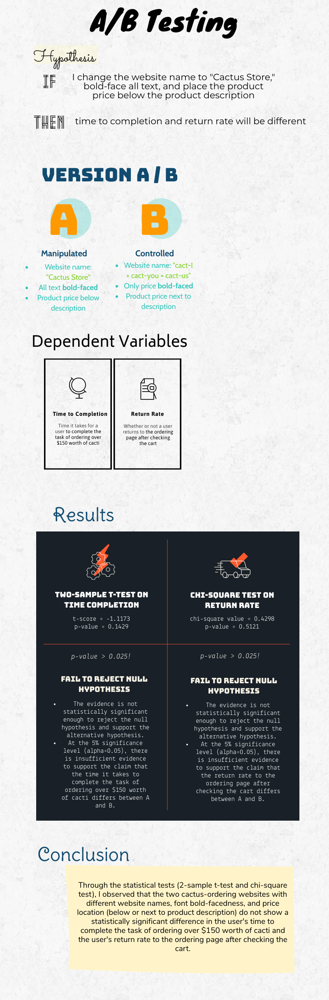

A/B Testing
Background
I created two different versions of the original cactus-shopping website, "cact-I +
cact-you =
cact-us" by adding different changes to it. For version A, I changed the website name to "Cactus Store" and
bold-faced the font throughout the entire page. The price is written below the product description. Version B
retains the original website name, with only its price bold-faced. Its
price is kept right next to the product description.
My main goal of this A/B testing is to determine
whether two different
websites with different website names, font bold-facedness, and price location (below or next to product
description) show a statistically significant difference in the user's time to complete the task of
ordering
over $150 worth of cacti and the user's return rate to the ordering page after checking the cart.
Version A

Version B

Hypotheses for Statistical Tests
Time to Completion
Null Hypothesis
The time it takes to complete the task of ordering over $150 worth of cacti does not differ between A and B.
Alternative Hypothesis
The time it takes to complete the task of ordering over $150 worth of cacti differs between A and B.
Return Rate
Null Hypothesis
The users' return rate to the ordering page after checking the cart does not differ between A and B.
Alternative Hypothesis
The users' return rate to the ordering page after checking the cart differs between A and B.
Reasoning behind the alternative hypotheses
Since I wish to see if the two websites produce statistically significantly different time to completion and return rate, and not to see if one website produces a longer/shorter time to completion and greater/smaller return rate (since I did not create the design changes expecting one to perform better than the other), I will be using a two tail test. Through this test, I want to determine if there is a statistically significant difference in time to completion and return rate between A and B in either direction. Thus, the alternative hypotheses state that the two variables simply "differ" between A and B, not "less than" or "greater than."
Data Collection and Data Crunching
In order to collect the data, I deployed two versions of the website on Heroku. The Heroku link
randomly selected interface A or B for users to test. Each user either got A or B chosen randomly, and they were
asked to fill their cart with at least $150 of cacti.
Then, I extracted the filtered log containing the time stamp, version, page load time, click time, id of clicked
element (cactus), and session ID for each user. I calculated the time to completion by subtracting page load
time from the click time for each distinct session ID. I also used the very last page load time as the end time
if
the user returned to the page and included the users who clicked regardless of whether the amount added is at
least $150. For the return rate, I counted the number of testers on A who
returned to the original cactus-ordering page after checking the cart and who did not, and the same for B as
well.
I had 25 data points in total, yet the very first data point was cut off, and two were invalid because the users
did not click
any buttons after loading
the websites. Since the first data point provides insufficient data (and can possibly become an unintended
outlier) and the other two are invalid, as they have mixed websites without any actions taken, those three data
points were removed.
Out of the remaining
22
users, 9 users tested
on version A, and the remaining 13 users tested on
version B. The first table below shows time to completion, page visited, and whether a user loaded both
versions. The second table then categorizes the data points for time to completion into A and B and also shows
the number of users who returned to the original ordering page after checking the cart and the number of those
who did not for both version A and version B.
An interesting point observed was that, as the last column of the first table indicates, some users loaded both
versions A and B. Then, after alternating between the two versions, they either exited or chose one version to
proceed to testing. One user actually tested both versions A and B, with some time in between, as noted in the
first table.


Test Types
Two-sample t-test was chosen for the time to completion for version A and B, as
it is numerical data.
Chi-square test was chosen for the return rate for version A and B, as it is categorical data.
Tests and Results

Additional Conclusion Points
The results tell us that the small changes applied based on the design principles and components, such as
emphasis
(font bold-facedness),
alignment (price
location), proportion, balance, etc., do not result in significant impact on users' ability to navigate through
the website between multiple pages or to complete simple tasks.
In general, I think the repetition of the same task over forty different websites for each user might have made
their time
to completion and return rate
relatively
uninfluenced by changes made on the original website, which could have suppressed the more variable data we were
seeking for significance
testing.
Based on the conclusions, I would not favor one website over the other when deploying. I would need more
testing, since
the test was inconclusive.